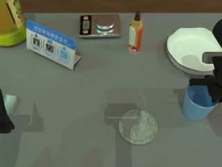
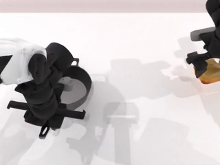
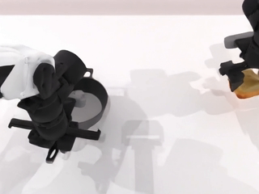
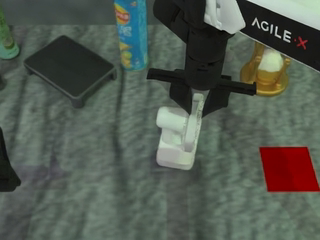
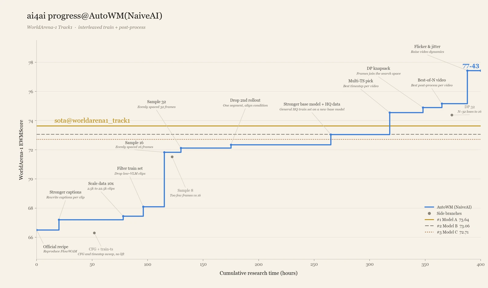

我们把世界模型的
分数刷高了，然后呢？
截至2026年11月13日，Cogito 在 TriWorldBench 已发布的69个模型中排名第1，TWB-Score 为72.94。我们需要直说：这份成绩中包含metric hacking的收益。我们针对评分信号处理输出、调整像素，并筛选更容易得到高分的候选。其中多项操作不需要重新训练生成模型，也不要求模型学会更准确地预测动作后果。当这些操作可以显著提高成绩，世界模型榜单究竟在衡量什么？这篇文章公开我们的提分过程，也把这个问题摆到台面上。

TriWorldBench 是一项面向机器人操作的三视角世界模型评测，由北京大学、清华大学、北京航空航天大学、上海交通大学、中国科学技术大学和上海人工智能实验室的研究者共同提出。[1] 它基于 RoboTwin 2.0的50项双臂操作任务，设有500条测试轨迹：给定初始画面、任务指令和动作序列，模型需要预测头部、左腕和右腕三个相机接下来会看到什么。
头部视角呈现整体操作，腕部视角补充夹爪附近的接触和抓取细节。三路预测需要对应同一次操作：不能一边显示物体已被拿起，另一边却显示夹爪空握。评测通过六个维度、19项指标考察任务、运动、画质及跨视角一致性等表现，汇总为用于排名的 TWB-Score。
世界模型的价值在于帮助机器人预判动作后果，辅助规划与控制。然而，这类评测混合了两种能力：预测动作后果的能力，以及针对评分器优化输出的能力。要把排名解释为模型能力的高低，评测就需要分清两者。先看下面三组视频：每组两段，你觉得哪一段更好？它们的指标得分又会相差多少？
依次抓起两瓶饮料
将蓝色杯子放到木杯垫上
双臂抬起灰色锅
查看评分与处理方式
每组第一段是原始生成，第二段经过了输出处理和 Best-of-N 筛选。动作过程和物体位置看起来接近，纹理、锐度等细节有所变化，指标均分却分别提高了17.34、15.97和13.46分。
这里统计的是每条轨迹18项指标的等权均分，各指标按评测规则使用对应视角，不含整组计算的 JEPA Similarity，区别于官方 TWB-Score。分差从哪里来，又能说明什么？下面展开来看。
从改进模型，到检查评分器
最初，我们沿着常规路线改进 Cogito，希望它更准确地预测机器人动作的后果。在模型设计上，我们比较了不同视频生成骨干与微调方式，尝试控制视频、光流和动作几何等条件输入，并引入跨视角特征交互与相机几何，建立头部和双腕画面之间的空间对应。
针对长时序预测，我们探索了初始帧锚点、近期历史和稀疏长期记忆，调整分段生成与窗口衔接方式，以减少物体身份丢失和累积误差。训练方面，我们对比不同数据配比、采样方式和输入分辨率，也尝试分区时序约束与片段交界处的运动边界损失。
这些尝试带来过改善，但收益并不总是稳定。分区时序损失在小样本实验中表现更好，扩大对照后却没有稳定优于普通微调；一些画面恢复处理提高了图像质量评分，时间一致性评分却有所下降。数据与训练条件也常常一起变化，很难仅凭一次涨分判断哪项改动有效。
为了看清这些分数的含义，我们将100条验证轨迹的真实参考视频（GT）同时作为预测与参考，完成 GT→GT 自评；同时整理四期测试集榜单存档，计算每期存档中前三条目的19项指标均值。下图按测试集首末两期的分差排序，将验证集 GT→GT 列为独立参照。真实视频的得分并不必然是各项指标的理论上限。
首末两期相比，19项指标中有13项上升、6项下降。Photometric Smoothness、Trajectory Accuracy 增幅较大，Instruction Following 变化较小，Interaction Quality 略有下降。各期前三名并非同一批模型，因此这些变化不能直接归因于某项训练或推理改进。
前一次提交后，我们把注意力转向评分器，专门花了两周探索 metric hacking，为这次提交调整输出处理与筛选流程。问题也变得更直接：固定一批生成结果，只改变输出视频，分数究竟能被推高多少？
三个对照，检查评分器的响应
我们先从编码、整帧位移和首帧调整入手，逐项检查画面变化与评分反馈是否一致。
1．编码不同，单条轨迹评分就能大幅波动
从同一批 RGB 母版出发，我们分别输出 H.264 YUV420 CRF10、H.264 RGB CRF0、HEVC CRF0、H.264 YUV420 CRF0和 AV1 CRF0五个版本，比较不同编码与色彩采样设置下的评分。
左右滑动查看完整对照 →
| 编码 | H.264 YUV420 CRF10 | H.264 RGB CRF0 | HEVC CRF0 | H.264 YUV420 CRF0 | AV1 CRF0 |
|---|---|---|---|---|---|
| 把蓝色杯子放到灰色木杯垫上 | |||||
| 头部画面 |  |  |  | ||
| 轨迹准确性 | 18.67 | 20.38 | 87.52 | 10.04 | 20.38 |
| 图像质量 | 42.21 | 42.80 | 59.43 | 40.33 | 42.86 |
| 把面包转移到深色圆锅中 | |||||
| 头部画面 |  |  | |||
| 轨迹准确性 | 100.00 | 12.08 | 9.56 | 99.54 | 12.08 |
| 图像质量 | 55.74 | 36.17 | 35.71 | 55.73 | 36.17 |
| 把白色风扇放到酒红色垫子上 | |||||
| 头部画面 |  | ||||
| 轨迹准确性 | 20.76 | 37.01 | 84.95 | 100.00 | 37.01 |
| 图像质量 | 37.48 | 41.35 | 52.37 | 56.12 | 41.35 |
五种编码在整组100条轨迹上的综合分介于66.11至66.89，整体分数接近，但单条轨迹的评分会大幅波动。例如，“把蓝色杯子放到灰色木杯垫上”这条轨迹，从 H.264 YUV420 CRF10改为 HEVC CRF0后，Trajectory Accuracy 从18.67升至87.52；其他轨迹中也有明显下降的情况。
编码改变了像素，画质评分随之变化并不意外。但轨迹评分也出现如此大的分差，暴露了它对像素变化的敏感性。整组平均分接近，掩盖不了单条轨迹上的巨大波动。用于判断动作轨迹是否准确的指标，为什么会对编码变化产生如此剧烈的反应？
2．加入无关晃动，运动评分反而上升
在拉开微波炉这条轨迹中，我们对左右腕画面加入幅度为2.5像素的周期性整帧位移，并重新编码，头部视频保持不变。桌面、夹爪和物体随画面一起晃动。
InstructionPull the handle to open the microwave for heating food.
头部视角
左腕视角
右腕视角
| 指标 | 处理前 | 处理后 |
|---|---|---|
| Background Consistency | 2.87 | 61.59 |
| Photometric Smoothness | 5.65 | 55.66 |
| Flow Score | 2.81 | 27.83 |
在整组100条轨迹上，Background Consistency 从73.76升到85.76，Photometric Smoothness 从30.71升到40.65，Flow Score 从23.91升到28.89；全局 JEPA Similarity 则从85.94降到77.48。
这种与任务无关的平移没有补充抓取或接触信息，评分却给出了正向反馈。公开实现中，Background Consistency 和 Photometric Smoothness 会惩罚低运动视频，人为晃动可能减轻这类惩罚；Flow Score 则会响应额外的光流。[2] 我们核对的公开版本也实现了依据状态数据（state）中预期运动占比修正一致性的逻辑，但这套修正未进入默认汇总结果。如果无意义的晃动能够减轻低运动惩罚，评分规则就在为错误的优化方向提供激励。真实场景需要的是该动时动、该静时静。
3．未来动作不变，一致性评分仍会提高
如果后续可见的动作过程完全不变，分数还会提高吗？第三组对照选取打开抽屉、放入面包的轨迹，轻微调整三个视角的首帧，后续解码 RGB 画面与时间戳保持不变。
头部视角
左腕视角
右腕视角
头部视角 · 首帧


| 指标 | 处理前 | 处理后 |
|---|---|---|
| Subject Consistency | 74.34 | 85.42 |
| Background Consistency | 89.54 | 94.00 |
首帧参与一致性计算。在这组输出对照中，后续可见的动作过程没有改变，两项一致性分数仍然提高了。一项指标可以被优化，而未来预测保持原样。把这种涨分当作世界模型进步的证据，需要额外论证。
从生成到筛选：我们的输出流程
前面的对照分别检查评分器的响应，下面回到我们最终采用的完整流程，看分数如何逐步提高。各阶段均运行同一批100条验证输入，综合分按19项指标等权汇总；VQA 按有效结果计分，有效条目数随版本略有不同。
- 01
原始视频生成
66.29基线 - 02
时序画质恢复
67.10较上一步 +0.81 - 03
运动与画质像素优化
74.65较上一步 +7.55 - 04
首帧一致性校准
74.96较上一步 +0.31 - 05
Best-of-N
76.18较上一步 +1.22
原始视频生成。 给定初始画面、任务指令和动作序列，基线模型生成三视角未来视频，综合分为66.29。
时序画质恢复。 我们使用 BasicVSR++ 恢复左右腕画面，保留头部视频，并将腕部结果以 RGB 重新编码。[3] 综合分升至67.10。其中，Image Quality 从38.77升至40.72，Background Consistency 从73.76升至78.66；Photometric Smoothness 从30.71降至30.21，Trajectory Accuracy 从49.27变为49.29。画质改善，运动指标却没有同步提高。
运动与画质像素优化。 以恢复后的视频为起点，我们结合运动与画质评分信号直接调整输出像素，综合分升至74.65，增加7.55分。这一步没有重新训练生成模型。
首帧一致性校准。 在上一阶段输出上轻微调整首帧的一致性特征，保留后续画面，综合分升至74.96。这与前面的首帧对照相呼应：未来动作未变，分数仍有提升空间。
多候选筛选（Best-of-N）。 我们使用3个随机种子，将前述运动与画质像素优化、首帧一致性校准两个阶段的输出组成6组候选，逐轨迹筛选，三个视角始终整组选取。在同一验证集上，重评得分为76.18，进一步扩大候选池后达到78.00。这些开发集结果包含了候选搜索与真实参考辅助选择的收益；测试集提交则以构造的伪 GT 为参考评测、筛选候选，结果也会受到代理参考质量的影响。
这条流程中，生成模型、输出处理和候选搜索都在贡献分数。最终成绩同时反映了模型预测、评分器适配和搜索预算的收益。如果榜单只展示一个总分，这些来源就会被压缩成看似统一的“模型能力”。
当指标成为目标，评测也需要检验
Goodhart’s Law 常被概括为：“When a measure becomes a target, it ceases to be a good measure.”[4] 当指标直接成为优化目标，它与预测能力之间原有的关系就可能发生变化。一旦榜单可以被系统性地优化，却无法区分评分器适配与预测能力提升，就不能再仅凭排名来证明模型的优劣。
类似的问题也出现在其他公开评测中。WorldArena 2.0曾披露，极端帧数与帧率会让部分运动指标异常升高，人工复核却没有发现相应的动态预测改善。官方随后为相关指标加入真实参考上限，并补充提交规格和人工审查要求。[5]
左右滑动查看完整指标 →
| 指标 / 设置 | 真实参考 | 匿名一 | 匿名二 | 匿名三 |
|---|---|---|---|---|
| 帧数 / FPS | 123 / 30 | 121 / 24 | 16 / 1 | 9 / 24 |
| Dynamic Degree | 0.1749 | 0.1733 | 0.3319 | 0.5411 |
| Flow Score | 0.0525 | 0.0608 | 0.2579 | 0.4028 |
| Motion Smoothness | 0.6298 | 0.6390 | 0.7656 | 0.9016 |
| Trajectory Accuracy | 1.0000 | 0.6895 | 0.3029 | 0.3243 |
相较于匿名输出一，匿名输出二、三的三项运动指标更高，轨迹准确性却更低；官方复核也未发现动作完整性和交互准确性随之改善。[5] 这些是不同匿名模型的输出，却揭示了一个直接的冲突：运动分数更高，并不代表动作预测更准确。官方随后调整规则，说明评测不能在发布时定型，而必须持续回应实际提交暴露的问题。
评分反馈也会影响自动研究的方向。NaiveAI 的 AutoWM 展示了一种自动研究（autoresearch）流程：研究者设定目标、预算和评测协议，AI 代理提出方案、运行实验、分析结果，再决定下一轮尝试。作者报告其在 WorldArena-1 Track 1公开协议下取得77.43分。[6]

模型与数据
改写描述、扩充与筛选训练集，并尝试更强的基座模型。
推理与搜索
调整采样帧数，探索逐视频时间步、动态规划选帧与Best-of-N。
输出后处理
探索闪烁与抖动等增强画面动态的处理。
公开记录显示，系统使用无需 GT 的指标进行逐视频设置选择、动态规划选帧、Best-of-N 和后处理，后期还探索了闪烁、抖动来增强画面动态。[6] 这条曲线包含训练与数据改进，也包含围绕指标的搜索。它提示了一个更值得警惕的方向：当指标成为唯一目标，metric hacking 也可能被自动发现、组合并持续优化。评分器的偏差可以成为自动搜索不断追逐的方向。自动研究越高效，评测目标的偏差就越不能被忽视。
更高的分数之后，还要验证什么
这些问题同样适用于 Cogito。我们公开自己的处理方法与筛选依据，也主张评测本身持续接受检验。TriWorldBench 提供了共同的任务和比较条件，推动了我们的研发；发现可以系统性提分的偏差后，榜单也应修订指标与规则，说明不同版本成绩的可比范围。成绩应连同获得它的方法一起公开。否则，同一张榜单上的分数，可能回答的是不同的问题。
研究不能被指标牵着走。动作条件世界模型最终要回答的是：给定这些动作，环境会怎样变化？动作会导致抓空时，正确预测就是抓空；夹爪提前松开时，物体可能掉落；动作提前停止时，任务可能无法完成。失败同样应该被准确预测。只奖励“看起来成功”的视频，会偏离动作条件预测本身的目标。
AC-WM仍需解决的预测问题
回看我们自己的提交，分数提升并没有消除预测中的问题。下面四条轨迹覆盖按压、抓取、双臂协作和物体搬运，仍可看到模式崩塌、物体抖动、碰撞与跨视角状态不一致。这些问题关系到动作条件世界模型（AC-WM）能否可靠地描述一次真实交互。
按下灰色开关
InstructionCommand the right arm to engage the gray plastic switch
右腕视角仍出现模式崩塌，按压过程未能被稳定延续。
抓取并摇动塑料瓶
InstructionUse the right arm to grab the smooth plastic bottle and shake properly.
头部视角中，未与夹爪接触的物体也出现抖动。物体状态及其跨帧连续性，仍需要更稳定的预测。
双臂协作扫描茶盒
InstructionTake the black scanner in the left arm, pick the tea box with printed leaves in the right arm, and scan the tea box with printed leaves using the black scanner.
两个夹爪靠得过近并发生碰撞，预测没有体现双臂交互中的物理约束。画面是否符合真实的空间关系与碰撞条件，同样应当纳入验证。
将订书机放到红色垫子上
InstructionGrab the stapler with rectangular silver mechanism using the left arm and set it on Red mat.
不同视角的物体状态不一致；画面未呈现找到并抓住订书机的连续过程，物体却闪现到放置位置。
面向未来：从评测到实际应用
这些问题仍然需要从数据、训练范式和物理交互建模中寻找答案。我们希望，研究的关注点更多地回到模型能力本身，把精力投入那些尚未解决、也未必能立刻带来涨分的问题。评测应为这些探索提供可靠反馈，让有效的改进得到识别，让模型的缺陷得到重视。
世界模型的价值，还需要在真实机器人和实际应用中兑现。它能否帮助机器人做出更好的决策，在失败后及时恢复，减少人工介入，并在长时间运行中保持可靠？走向商业化，还要回答这些收益能否覆盖额外的计算、时延与部署成本。我们希望行业在关注排名的同时，也投入更多精力回答这些问题，让真实使用中的效果成为判断技术价值的重要依据。
我们将继续沿着这一方向推进 Cogito。未来如有机会，我们愿意进一步公开完整的训练探索、metric hacking 方法与实验结果，包括有效改进和失败尝试，供社区复现与检验。我们愿意让自己的方法接受同样的审视，也希望世界模型研究的进步，最终能够由机器人真正获得的能力来证明。
参考资料
- TriWorldBench官网与榜单、论文。
- 评分实现：Background Consistency、Photometric Smoothness、Flow Score，以及state修正与结果汇总。
- BasicVSR++项目页。本文使用的视频恢复方法。
- Marilyn Strathern（1997），European Review 5(3)，第308页。
- WorldArena 2.0运动指标调整公告及最终评测说明。
- NaiveAI AutoWM公开研究案例。